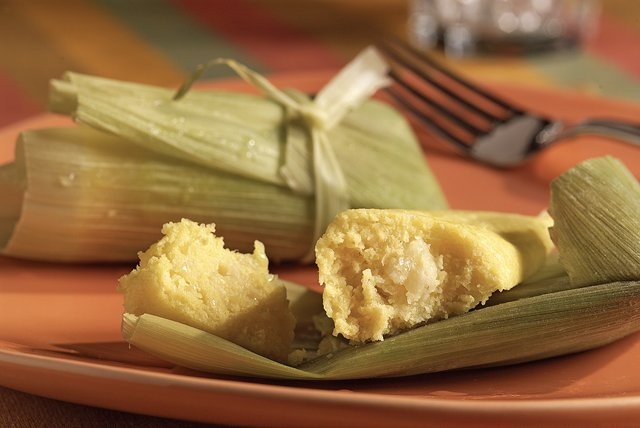

Hogao
16/05/2018, Armenia

6 elotes (mazorcas de maíz) frescos (con hojas)
1/2 taza de cebolla picada
1/4 taza (1/2 barra) de mantequilla, ablandada
1 cucharadita de polvo para hornear CALUMET Baking Powder
3 huevos
1 taza de harina de maíz
1 paquete (8 onzas) de queso mozzarella KRAFT Mozzarella Cheese, cortado en cubos de 1/2 pulgada
2 tazas de agua
1 Quítale las hojas verdes y el pelo al elote, teniendo cuidado de que las hojas queden enteras. Desecha el pelo. Escalda las hojas en una olla grande con agua hirviendo durante 1 minuto. Sácalas del agua y escúrrelas.
2 Corta los granos de maíz al elote. Coloca la mitad de los granos y las cebollas en la licuadora; tápala. Mézclalos a velocidad media hasta obtener una consistencia homogénea. Vierte la mezcla en un recipiente grande. Coloca el resto de los granos, la mantequilla, el polvo para hornear, los huevos y la harina de maíz en la licuadora; tápala. Mezcla hasta que la consistencia sea homogénea. Agrégaselos al puré de maíz que quedó en el recipiente. Incorpora el queso. (La masa quedará espesa pero no se endurecerá.)
3 Coloca 2 de las hojas de maíz sobre la superficie de trabajo de modo que queden un poco superpuestas a lo largo. Con una cuchara, coloca 1/4 taza del puré de maíz sobre la mitad inferior de las hojas; dobla la parte superior sobre el relleno. Dóblalas por la mitad de izquierda a derecha y, luego, de derecha a izquierda. (Debe quedar abierto uno de los extremos de cada humita.) Repite estos pasos con 34 de las hojas de maíz restantes y el resto del puré de maíz. Amárralas con tiritas delgadas hechas con las hojas de maíz restantes de modo que no se abran los lados que doblaste.
4 Llena una olla grande con 2 tazas de agua. Forra el cesto de cocción al vapor con la mitad de las hojas de maíz restantes; coloca el cesto en la olla. Coloca las humitas verticalmente dentro del cesto con sus extremos abiertos hacia arriba; cúbrelas con el resto de las hojas. Ponle la tapa a la olla. Haz que hierva el agua a fuego alto. Reduce el fuego a bajo; déjalas cocer al vapor por 30 minutos o hasta que estén firmes.
¡Disfrútenlo!